flowchart LR classDef iowa color:#000000,fill:#FFCD00, stroke:#000000 A((S)) --> B((E)) B --> C((I)) C --> D((R)) D --> A class A,B,C,D iowa
A Hybrid Particle Filter for Simultaneous Parameter and State Estimation
Annika Helverson
Department of Biostatistics, University of Iowa
April 30, 2024
Scope of thesis
This thesis consists of three components:
A computationally efficient algorithm for state space estimation
A software package in Julia for convenient implementation of our algorithm
A real data application to a cholera outbreak in Haiti
Outline
- Motivation
- Background
- Nested Particle Filter
- Hybrid Particle Filter
- Simulation Study
- Algorithm Speed
- Application
- Software
- Discussion
Motivation
Infectious disease modeling plays a pivotol role in understanding and predicting the impact of pathogens on public health, but developing effective models is challenging.
It can be difficult to characterize how pathogens interact with their hosts and the environment.
Factors like heterogeneous host mobility patterns and immune responses complicate the disease dynamics.
The outcome of interest might not be directly observable.
- Unobserved outcome is called a latent state
Identifying a simplified yet reasonable representation of the underlying process can be an important step in modeling such a complex system.
State Space Models
State space models relate latent states and their evolution to observed outcomes.
These models have two fundamental components:
State transition equation \(x_t = f(x_{t-1}, \theta, \epsilon_t)\)
Describes how a latent state evolves from \(x_{t-1}\) to \(x_t\)
\(\theta\) are parameters, \(\epsilon_t\) is process noise
Assumed to be a Markov process such that \(p(x_t | x_{t-1}, x_{t-2}, \dots, x_{0}) = p(x_t | x_{t-1})\)
Observation equation \(y_t = g(x_t, \theta, \delta_t)\)
Relates observed data \(y_t\) to the latent state \(x_t\)
\(\delta_t\) is observation noise
Compartmental Models
The state transition equation can be represented by a compartmental model.
Relevant disease stages (compartments) such as susceptible (S), infectious (I), exposed (E), and recovered or removed (R) are identified.
At each time point in an epidemic, every individual is classified into one disease stage.
The Markov transition process defines how individuals move between compartments.
Problem Statement
In this context, there are two features to estimate:
The latent state.
Model parameters (e.g., infection rate, incubation period, etc.).
Simultaneous estimation of latent states and unknown parameters lacks a definitive resolution.
Markov Chain Monte Carlo (MCMC) methods, while theoretically applicable, are inefficient and encounter convergence issues in practice.
A computationally efficient class of methods for latent state estimation are called particle filters but they rely on known parameters.
We propose a particle filter extension such that both latent states and model parameters can be estimated within one efficient algorithm.
Particle Filters
Bayes’ Theorem
\(\text{posterior} = \frac{\text{likelihood} \times \text{prior}}{\text{marginal likelihood}}\)
The goal of a particle filter is to estimate the posterior, \(p(x_t | y_{1:t})\), at each time \(t = 0, 1, \dots, T\) using Bayes’ theorem:
\[p(x_t | y_{1:t}) = \frac{p(y_t | x_t) p(x_t | y_{1:t-1})}{\int p(y_t | x_t) p(x_t | y_{1:t-1})dx_t}\]
- Recursion is used to obtain a complete estimate of the form \(p(x_{0:t} | y_{1:t})\)
If the system is both linear and Gaussian a Kalman filter can be used with no approximation.
However, an approximation is required for non-linear, non-Gaussian models.
Use importance sampling to approximate the continuous pdf with a weighted sum of \(N_s\) potential realizations of the true state.
Particle filter approximation: \(p(x_{0:t}| y_{1:t}) \approx \sum_{i=1}^{N_s} w_{t}^{i} \delta (x_{0:t} - x_{0:t}^i)\)
Importance density chosen such that \(q(x_{0:t}|y_{1:t}) = q(x_t | x_{0:t-1}, y_{1:t}) q(x_{0:t-1}|y_{1:t-1})\)
Samples are drawn from \(x_t^i \sim q(x_t| x_{0:t-1}, y_{1:t})\)
The set \(\{ w_t^i, x_{0:t}^i\}_{i=1}^{N_s}\) contains \(N_s\) samples, \(x_{0:t}^i\) and their weights \(w_t^i\).
Obtain the full sample \(x^i_{0:t}\) recursively by augmenting \(x_{0:t-1}^i\) with \(x_t^i\)
Calculate weights with \(w_t^i = w_{t-1}^i \frac{p(y_t | x_t^i) p(x_t^i | x_{t-1}^i)}{q(x_t^i | x_{t-1}^i, y_t)}\)
The weights are then normalized so \(\sum_{i=1}^{N_s} w_t^i = 1\)
Particle Filter Components
To carryout the approximation, particle filters require:
A process model \(f_t(x_{t-1}, u_{t})\)
A measurement model (likelihood) \(g_t(x_t, y_t, u_{t})\)
Assumes \(x_{0:t}\) is a Markov chain
\(p(x_t | x_{1:t-1}, y_{1:t-1}) = p(x_t | x_{t-1})\)
\(p(y_t | x_{1:t}) = p(y_t | x_t)\)
Sequential Importance Sampling (SIS)
The basis of all particle filtering schemes is SIS:
Toy Demonstration
Problems with Particle Filters
Particle filters are widely used and well documented, but have some notable shortcomings including:
- Particle degeneracy
- A solution is resampling
- Sample impoverishment
- A solution is roughening
- Assumes that parameters are both static and known
- Ongoing challenge.
Relevant Particle Filter Extensions
Resample-Move: a two-step algorithm addressing both particle degeneracy and sample impoverishment.
Step 1: Resample particles.
Step 2: Use a Markov transition kernel to move proposed states to new locations.
The Nested Particle Filter: designed to approximate the posterior probability distribution of the fixed parameters in a state space model.
Can jointly estimate a latent state and unknown parameters.
Uses two “layers” of filtering, one for the parameters and one for the latent state.
There are \(N \times M\) particles. \(N\) is the number of parameter vectors and \(M\) is the number of state vectors for each of the \(N\) parameter vectors.
Resampling occurs among each of the \(M\) state estimates and again among each of the \(N\) parameter vectors.
Uses only \(N\) importance weights for \(N \times M\) particles.
The Nested Particle Filter
- \(N\) is the number of parameter vectors drawn.
- \(M\) is the number of state estimates per parameter vector
- \(N \times M\) is the total number of particles in the filter
- \(\{X_{t}\}_{t \geq 0}\) is a random sequence called a state process
- \(\{x^{(i,j)}\}_{1 \leq i \leq N; \ 1\leq j \leq M}\) are the state estimates
- \(\{Y_t\}_{t \geq 1}\) is a random sequence called an observation process
- \(\{y_t\}_{t \geq 1}\) is a specific observation record
- \(\Theta\) is a random variable. If \(\Theta = \theta\) the parameter is known.
- \(\epsilon\) is the parameter jittering variance
- \(\{ \omega^{(i)} \}_{1 \leq i \leq N}\) are the particle weights
- \(\pi_0(\cdot)\) indicates a prior proposal distribution.
- \(g_{t, \theta}(y_t | x)\) is the likelihood of \(x\) (measurement function)
- \(p\) is a constant that determines the jittering variance
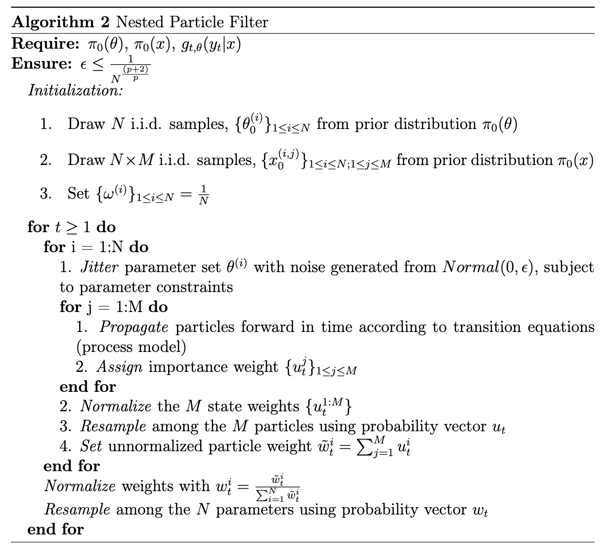
The optimal filter, one based on the proposal \(p(x_t | x_{t-1}, y_t)\) is continuous with respect to the parameters \(\theta\).
- If \(\theta \approx \tilde{\theta}\) then \(p(x_{t-1} | y_{1:t-1}, \theta) \approx p(x_{t-1} | y_{1:t-1}, \tilde{\theta})\) and \(p(x_{t-1}, \theta | y_{1:t-1}) \approx p(x_{t-1}, \tilde{\theta} | y_{1:t-1})\).
\(\theta\) can only take on values in compact set \(D_{\theta} \subset \mathbb{R}^{d_{\theta}}\)
\(g_{t, \theta}(y_t|x)\) (likelihood) must be uniformly bounded over the parameter space
Parameter Jittering Justification
The continuity assumption is required because of the parameter jittering step.
Filter initialized with \(N\) realizations of \(\theta\), \(\{ \theta_{0}^{(i)}\}_{1 \leq i \leq N}\)
The jitter perturbs each parameter with random noise generated from \(N(0, \epsilon)\) where \(\epsilon \leq N^{\frac{1}{\frac{p + 2}{p}}}\) at every time step yielding \(\{ \tilde{\theta}_{t}^{(i)}\}_{1 \leq i \leq N}\)
With the continuity assumption we argue that \(\{ \theta_{0}^{(i)}\}_{1 \leq i \leq N} \approx \{ \tilde{\theta}_{1}^{(i)}\}_{1 \leq i \leq N}\) and subsequently \(\{ \theta_{t-1}^{(i)}\}_{1 \leq i \leq N} \approx \{ \tilde{\theta}_{t}^{(i)}\}_{1 \leq i \leq N}\)
This is necessary because the Markov transition, \(p(x_t^i|x_{t-1}^i)\) implicitly conditions on the parameter value.
- If \(\{ \theta_{t-1}^{(i)}\}_{1 \leq i \leq N} \neq \{ \tilde{\theta}_{t}^{(i)}\}_{1 \leq i \leq N}\), the algorithm cannot be run recursively.
Weights for Nested Particle Filter
Justification for the weighting scheme comes from the Balance Heuristic proposed by Veach and Guibas (1995).
Let \(p_1, \dots, p_n\) be importance sampling distributions.
Define \(c_i\) as the proportion of samples drawn from \(p_i\) where \(\sum_i c_i = 1\).
Each estimator is parameterized by a set of weighting functions \(w_1, \dots, w_n\)
The combined estimator across all samples is:
\[F = \sum_{i=1}^n \frac{1}{n_i} \sum_{j=1}^{n_i} w_i(X_{i,j}) \frac{f(X_{i,j})}{p_i(X_{i, j})} \text{ where } X_{i,j} \text{ are indep. samples from } p_i\]
If weights are calculated with
\[\hat{w}_i(x) = \frac{c_i p_i(x)}{\sum_j c_j p_j(x)}\]
The value of the combined estimator, \(F\), does not depend on \(i\).
The Hybrid Particle Filter
The hybrid particle filter maintains the \(N \times M\) structure of the nested particle filter.
The weights are extended from an \(N \times 1\) vector to an \(N \times M\) matrix.
Resampling is triggered only when the effective sample size drops below a resampling threshold.
Resample-move is implemented such that a Metropolis-Hastings moves step is applied to \(tt\%\) of time points and \(pp\%\) of particles.
- \(N\) is the number of parameter vectors drawn.
- \(M\) is the number of state estimates per parameter vector
- \(N \times M\) is the total number of particles in the filter
- \(\{X_{t}\}_{t \geq 0}\) is a random sequence called a state process
- \(\{x^{(i,j)}\}_{1 \leq i \leq N; \ 1\leq j \leq M}\) are the state estimates
- \(\{Y_t\}_{t \geq 1}\) is a random sequence called an observation process
- \(\{y_t\}_{t \geq 1}\) is a specific observation record
- \(\Theta\) is a random variable. If \(\Theta = \theta\) the parameter is known.
- \(\epsilon\) is the parameter jittering variance
- \(\{ \omega^{(i, j)} \}_{1 \leq i \leq N; \ 1\leq j \leq M}\) is the matrix of particle weights
- \(N_{eff}\) is the effective sample size
- \(N_{threshold}\) is the minimum effective sample size before resampling is triggered
- \(\pi_0(\cdot)\) indicates a prior/initial proposal distribution.
- \(g_{t, \theta}(y_t | x)\) is the likelihood of \(x\) (measurement function)
- \(p\) is a constant that determines the jittering variance
Justification for the Hybrid Particle Filter
There are two fundamental differences between the Nested and Hybrid Particle Filters:
In the hybrid filter, resampling only occurs when the effective sample size is small enough. After resampling, a “move” step from resample-move is implemented.
- Well justified by Gilks and Berzuini (2001)
In the hybrid filter, there is one weight for every particle \(N \times M\)
Importance sampling can be applied when the importance distribution depends on both the sample index \((i)\) and iteration index \((t)\) (Cappé et al., 2004).
This allows \(w_t^{(i)} \propto \frac{p(x_{0:t}^{(i)} | y_{1:t})}{q_{it}(x_{0:t}^{(i)} | y_{1:t})}\)
Simulation Study (Single Location)
Chain-binomial SEIR model with three parameters: \(\beta\) (transmission rate), \(\sigma\) (incubation rate), and \(\gamma\) (recovery rate).
Let \(N_S\), \(N_E\), \(N_I\), and \(N_R\) denote the number of people occupying the S, E, I, and R compartments respectively
\(N_p = N_S + N_E + N_I + N_R = 60,000\)
\[S \rightarrow E \sim Binomial(N_S, 1 - exp\{-\beta * I / N_p \})\] \[E \rightarrow I \sim Binomial(N_E, 1 - exp\{ -\sigma\})\] \[I \rightarrow R \sim Binomial(N_I, 1 - exp\{ -\gamma \})\]
True parameters: \(\beta = 0.2\), \(\sigma = 0.2\), and \(\gamma = 0.1\)
Observations are under-reported cases from \(Poisson(\text{rate} = 0.5 * \lambda)\)
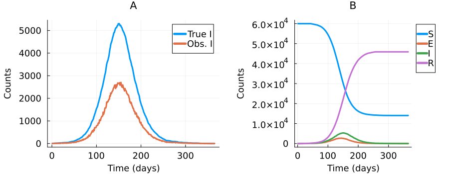
Simulation Study Conditions
For both Hybrid and Nested Particle Filters, we vary the number of particles and the priors/initial proposals.
Number of particles
\(N = M = 10\) (\(N \times M = 100\))
\(N = M = 30\) (\(N \times M = 900\))
\(N = M = 50\) (\(N \times M = 2500\))
Priors/Initial Proposals
Strongly Informative:
\(\pi(\beta) \sim Normal(0.2, 0.01)\)
\(\pi(\sigma) \sim Normal(0.2, 0.01)\)
\(\pi(\gamma) \sim Normal(0.1, 0.01)\)
Weakly Informative
\(\pi(\beta) \sim Gamma(4, 0.05)\)
\(\pi(\sigma) \sim Gamma(4, 0.05)\)
\(\pi(\gamma) \sim Gamma(4, 0.05)\)
Flat
\(\pi(\beta) \sim Uniform(0, 0.5)\)
\(\pi(\sigma) \sim Uniform(0, 0.5)\)
\(\pi(\gamma) \sim Uniform(0, 0.5)\)
. . .
Results: Strongly Informative
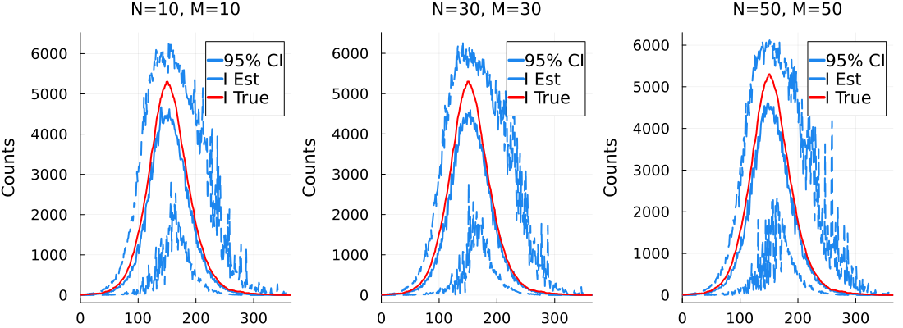
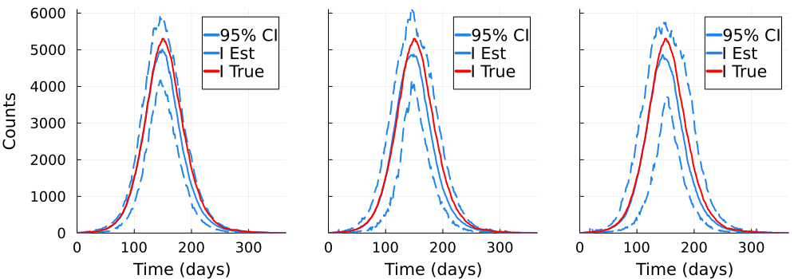
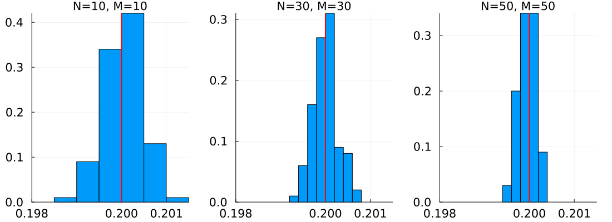
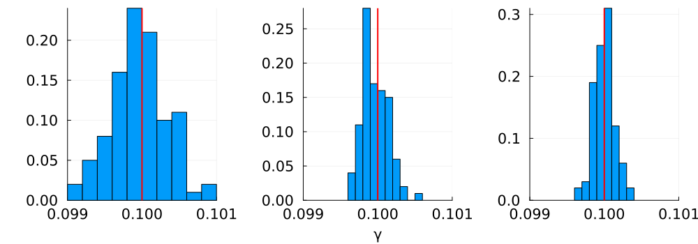
Results: Flat
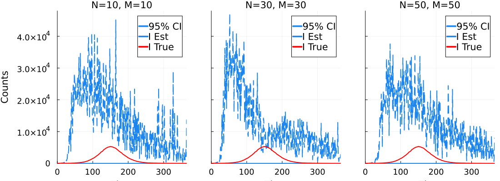
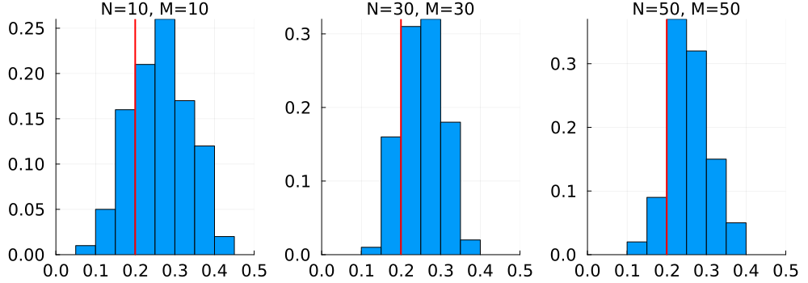
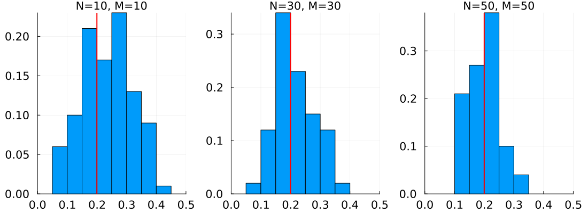
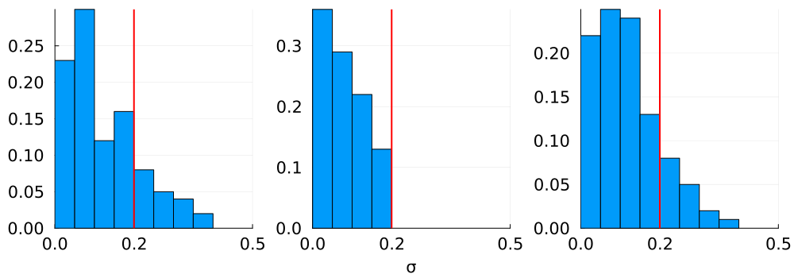
Results: Weakly Informative
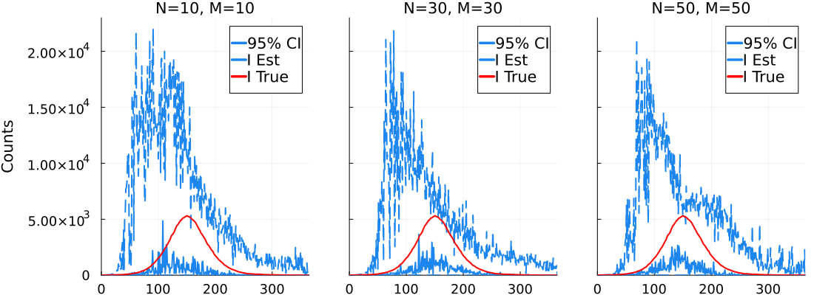
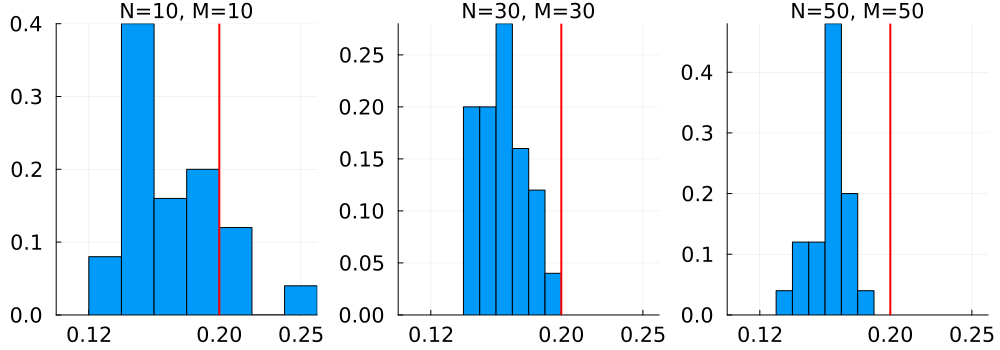
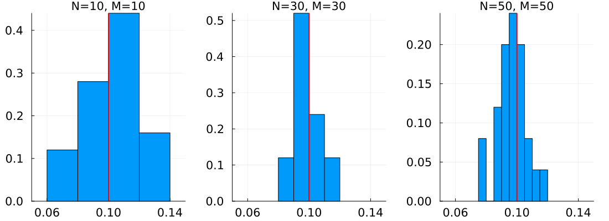
Simulation Summary
Simulation Discussion
With strongly informative priors/initial proposals, both methods estimate parameters well but the Nested approach struggled with state estimation.
With flat priors/initial proposals, both methods struggled but the Nested approach was better able to estimate parameters.
With weakly informative priors/initial proposals, both methods were able to estimate parameters but the Nested approach struggled to estimate the latent state.
Similar results in our multiple location simulation study.
Exploration of the parameter space is limited to small perturbations of \(\theta\). If the initial parameter values do not adequately cover the region around the true parameter values, it is reasonable to believe that parameter perturbations will not be sufficient in moving the parameters to the true value.
Speed Comparison
We compared the time required to conduct estimation (clock time) with the Hybrid and Nested Particle Filters as well as an MCMC approach.
In order to reach convergence with MCMC we were limited to a simple, single location SIR model with two parameters.
Effective sample size (ESS) is not compared because a single measure of ESS for a particle filter is not attainable.
All timing was done with the BenchmarkTools.jl package and all algorithms were tested using Julia 1.10.0 on an Mac with Apple M1 CPU (3.2GHz) with 8 GB memory.
Chain binomial SIR model:
\[\frac{dS}{dt} = -S * (\frac{\beta}{N_p} * I)\]
\[\frac{dI}{dt} = S * (\frac{\beta}{N_p} * I) - \lambda * I\]
\[\frac{dR}{dt} = \lambda * I\]
60,000 people
\(\beta \sim Uniform(0, 1)\), with true value 0.01
\(\lambda \sim Uniform(0, 1)\) with true value 0.01
| T | N | M | Hybrid PF Runtime | Nested PF Runtime |
|---|---|---|---|---|
| 365 | 10 | 10 | > 1 second | > 1 second |
| 365 | 50 | 50 | 18 seconds | 15 seconds |
| 365 | 100 | 100 | 126 seconds | 260 seconds |
| 365 | 10 | 50 | 3 seconds | 3 seconds |
| 365 | 50 | 10 | 3 seconds | 3 seconds |
| 365 | 10 | 100 | 7 seconds | 6 seconds |
| 365 | 100 | 10 | 7 seconds | 6 seconds |
| 100 | 10 | 10 | > 1 second | > 1 second |
| 100 | 50 | 50 | 7 seconds | 4 seconds |
| 100 | 100 | 100 | 33 seconds | 16 seconds |
| 100 | 10 | 50 | 1 second | > 1 second |
| 100 | 50 | 10 | 1 second | > 1 second |
| 100 | 10 | 100 | 2 seconds | 2 seconds |
| 100 | 100 | 10 | 2 seconds | 1 second |
- An MCMC approach using NUTS in Turing.jl with four chains for a 365 time point epidemic ran for 43398 seconds (12 hours, 3 minutes, 18 seconds) before converging.
Application: Cholera Outbreak
We consider a 103 week cholera outbreak in Haiti from 2010 through 2012.
Cholera is an acute infection caused by the bacterium Vibrio cholerae (V. cholerae) which can result in severe diarrhea.
V. cholerae is usually ingested via contaminated food or water and introduced back into the environment through contaminated fecal matter.
- Known for surviving for long periods of time in fresh, salty, and brackish water.
We aim to capture the bacterial spread though Haiti’s waterways with political borders and rainfall data.
- We do not have data on the size and location of actual waterways or sewage systems.
- We devised a fully stochastic, spatial, chain binomial Susceptible- Infected-Recovered-Deceased (SIRD) model to estimate weekly cholera case counts in Haiti.
Spatial Locations
Haiti is divided into 10 departments:
Data
The observed data are weakly reported case counts in each of Haiti’s 10 departments.

- Additionally, weekly rainfall estimates in each department are reported.
Concentration of V. cholerae
The primary driver of the epidemic is the environmental concentration of V. cholerae at each location (\(B_{(l)}(t)\)).
There are two mechanisms through which \(B_{(l)}(t)\) changes over time:
Natural death.
Infected individuals release contaminated fecal matter, dispersed via rainwater, into the environment.
\[\frac{d B_{(l)}}{d t} = - (\mu_B \times B_{(l)}(t)) + (\frac{1}{h_{(l)}} \times (1 + r_{(l)}(t)) \times I_{(l)}(t))\]
The estimated concentration of V. cholerae in the environment decreases over the course of the epidemic in all 10 departments.
Consistent with the empirical data showing a decline in reported cases overtime.
Near the end of the surveillance period when reported cases were low, the estimated concentration of V. cholerae is similar in all ten of Haiti’s departments.
- This is consistent with the reports of underlying levels of contaminants in public water sources in countries that lack adequate sewage treatment systems (Tibbetts, 2000).
Software
We developed a software package in Julia to implement the Hybrid Particle Filter for compartmental models.
The package also implements the Nested Particle Filter.
Any compartmental model structure can be specified.
Supports stochastic and deterministic transition equations.
Written entirely in Julia.
- Highly customizeable.
Handles simulation and estimation.
Composite Types
Post-Processing
Code Demonstration
Code Demonstration: Simulating Data
Nt = 365
Nloc = 1
N = 50
M = 50
p = 3
# ODE for SE, EI, IR transitions
odeSE(; S, E, I, R, Np, σ, γ, β, Nloc) = (β .* I ./ Np)
odeEI(; S, E, I, R, Np, σ, γ, β, Nloc) = σ
odeIR(; S, E, I, R, Np, σ, γ, β, Nloc) = γ
# make transition functions from ODE
SE = makeTrans(odeSE, :S, :E)
EI = makeTrans(odeEI, :E, :I)
IR = makeTrans(odeIR, :I, :R)
transitions = [SE, EI, IR]Code Demonstration: Simulating Data
Nt = 365
Nloc = 1
N = 50
M = 50
p = 3
# ODE for SE, EI, IR transitions
odeSE(; S, E, I, R, Np, σ, γ, β, Nloc) = (β .* I ./ Np)
odeEI(; S, E, I, R, Np, σ, γ, β, Nloc) = σ
odeIR(; S, E, I, R, Np, σ, γ, β, Nloc) = γ
# make transition functions from ODE
SE = makeTrans(odeSE, :S, :E)
EI = makeTrans(odeEI, :E, :I)
IR = makeTrans(odeIR, :I, :R)
transitions = [SE, EI, IR]
θ = (; Np=60000, σ=0.2, γ=0.1, β=0.2)
# set initial compartment values
compartments = (S=zeros(Float16, nLoc) .+ 59990,
E=zeros(Float16, nLoc) + fill(0, nLoc),
I=zeros(Float16, nLoc) + fill(0, nLoc),
R=zeros(Float16, nLoc))
compartments[:E][1] = 3
compartments[:I][1] = 7Code Demonstration: Simulating Data
Nt = 365
Nloc = 1
# ODE for SE, EI, IR transitions
odeSE(; S, E, I, R, Np, σ, γ, β, Nloc) = (β .* I ./ Np)
odeEI(; S, E, I, R, Np, σ, γ, β, Nloc) = σ
odeIR(; S, E, I, R, Np, σ, γ, β, Nloc) = γ
# make transition functions from ODE
SE = makeTrans(odeSE, :S, :E)
EI = makeTrans(odeEI, :E, :I)
IR = makeTrans(odeIR, :I, :R)
transitions = [SE, EI, IR]
θ = (; Np=60000, σ=0.2, γ=0.1, β=0.2)
# set initial compartment values
compartments = (S=zeros(Float16, nLoc) .+ 59990,
E=zeros(Float16, nLoc) + fill(0, nLoc),
I=zeros(Float16, nLoc) + fill(0, nLoc),
R=zeros(Float16, nLoc))
compartments[:E][1] = 3
compartments[:I][1] = 7
# simulate and epidemic
Random.seed!(3453)
simEp, simPar = simEpidemic(Nt, θ, compartments, transitions, nLoc);Code Demonstration: Particle Filter
# prepare "under-reported" cases
ysim = [simEp[:I][:, t] for t in 1:365]
yobs = rand.(MultPoisson.(ysim * 0.5));
# add components for particle filter
## measurement function
function g(y, particles, changes, data, n, θ, θt, t, Nloc)
μ = particles[:I][n, :, t]
logpdf.(MultPoisson.(μ), [y[t] .* 2])
end
# priors/initial proposals
βprop = makeProposal(Gamma(4, 0.05), :β)
σprop = makeProposal(Gamma(4, 0.05), :σ)
γprop = makeProposal(Gamma(4, 0.05), :γ)
proposals = [βprop, σprop, γprop]
# known parameters
θ = (; Np=60000)Code Demonstration: Particle Filter
# add components for particle filter
## measurement function
function g(y, particles, changes, data, n, θ, θt, t, Nloc)
μ = particles[:I][n, :, t]
logpdf.(MultPoisson.(μ), [y[t] .* 2])
end
# priors/initial proposals
βprop = makeProposal(Gamma(4, 0.05), :β)
σprop = makeProposal(Gamma(4, 0.05), :σ)
γprop = makeProposal(Gamma(4, 0.05), :γ)
proposals = [βprop, σprop, γprop]
# known parameters
θ = (; Np=60000)
N = 50
M = 50
p = 3
## run hybrid particle filter
out = pf_hybrid2(yobs, N, M, θ, g, compartments, transitions, proposals; p=p)
Iest = getstate(out[1], :I, 1, out[4])Code Demonstration: Particle Filter
# add components for particle filter
## measurement function
function g(y, particles, changes, data, n, θ, θt, t, Nloc)
μ = particles[:I][n, :, t]
logpdf.(MultPoisson.(μ), [y[t] .* 2])
end
# priors/initial proposals
βprop = makeProposal(Gamma(4, 0.05), :β)
σprop = makeProposal(Gamma(4, 0.05), :σ)
γprop = makeProposal(Gamma(4, 0.05), :γ)
proposals = [βprop, σprop, γprop]
# known parameters
θ = (; Np=60000)
N = 50
M = 50
p = 3
## run hybrid particle filter
out = pf_hybrid2(yobs, N, M, θ, g, compartments, transitions, proposals; p=p)
Iest = getstate(out[1], :I, 1, out[4])
# plot results
plot([simEp[:I][1, :], Iest, first.(yobs)], color=[:red :dodgerblue2 :green], label=["Truth" "Estimate" "Observed"], legend=:outertopright)Code Demonstration: Particle Filter
Discussion and Conclusions
The Hybrid Particle Filter offers a computationally efficient approach to the simultaneous estimation problem.
Does not perform well with flat priors.
Fast relative to MCMC but generally slower than the Nested Particle Filter.
- Alternative resampling schemes should be explored.
Potential for two-stage estimation approaches
Results from the Hybrid algorithm could be used as a “hot start” for MCMC
Results from the Nested Particle Filter can be used to construct weakly informative priors for the Hybrid Particle Filter.
Contributions
- We have introduced a novel particle filtering algorithm: the Hybrid Particle Filter.
- Enables efficient simultaneous estimation of latent states and unknown parameters.
- We have developed a software package in Julia.
- Offers a convenient, accessible, and customizeable way for researchers to use our algorithm under any compartmental model structure.
- We constructed a fully stochastic, spatially explicit model for a cholera outbreak in Haiti
- Other researchers have been limited to two stage, partially stocahstic models.
Our novel algorithm and accompanying custom software package have the potential to make complex state space modeling more accessbile and more efficient.
Acknowledgements
Thesis and RA advisor, Dr. Grant Brown
Committee members, Dr. Emily Roberts, Dr. Daniel Sewell, and Dr. Brian Smith
University of Iowa Biostatistics Department faculty, staff, and students
- Friends, family, and cats

Questions?
Appendix: Particle Filters
Estimation occurs in two steps:
Predict: Compute the prior \(p(x_t | y_{1:t-1}) = \int p(x_t | x_{t-1}) p(x_{t-1} | y_{1:t-1}) dx_{t-1}\)
Update: Use the prior from step 1 to obtain a posterior estimate \(p(x_t | y_{1:t})\)
\[p(x_t | y_{1:t}) = \frac{p(y_t | x_t) p(x_t | y_{1:t-1})}{\int p(y_t | x_t) p(x_t | y_{1:t-1})dx_t}\]
However, analytical evaluation of steps 1 and 2 is often impossible and an approximation is required.
- Approximate the continuous pdf with a weighted sum of \(N_s\) potential realizations of the true state with \(p(x_{0:t}| y_{1:t}) \approx \sum_{i=1}^{N_s} w_{t}^{i} \delta (x_{0:t} - x_{0:t}^i)\)
Appendix: Weight Calculation
\[\begin{align} \label{eq:weightDeriv} p(x_{0:t}|y_{1:t}) &= \frac{p(y_{t}|x_{0:t}|y_{1:t-1}) p(x_{0:t}|y_{1:t-1})}{p(y_t | y_{1:t-1})} \\ &= \frac{p(y_{t}|x_{0:t}|y_{1:t-1}) p(x_{t}|x_{0:t-1}|y_{1:t-1})}{p(y_t | y_{1:t-1})} \times p(x_{0:t-1}|y_{1:t-1}) \\ &= \frac{p(y_t|x_t) p(x_t|x_{t-1})}{p(y_t|y_{1:t-1})} \times p(x_{0:t-1}|y_{1:t-1}) \\ &\propto p(y_t | x_t) p(x_t|x_{t-1}) p(x_{0:t-1}|y_{1:t-1}) \end{align}\]
Note that importance weights are calculated by taking a ratio of the posterior and the importance density for each particle:
\[\begin{equation} \label{eq:impwt} w_t^i \propto \frac{p(x_{0:t}^i | y_{1:t})}{q(x_{0:t}^i | y_{1:t})} \end{equation}\]
Finally,
\[\begin{align} \label{eq:wtsub} w_t^i &\propto \frac{p(x_{0:t}^i|y_{1:t})}{q(x_t^i|x_{0:t-1}^i, y_{1:t}) q(x_{0:t-1}^i|y_{1:t-1})} \nonumber \\ &= \frac{p(y_t | x_t) p(x_t|x_{t-1}) p(x_{0:t-1}|y_{1:t-1})}{q(x_t^i|x_{0:t-1}^i, y_{1:t}) q(x_{0:t-1}^i|y_{1:t-1})} \nonumber \\ &= w_{t-1}^i \frac{p(y_t|x_t^i) p(x_t^i | x_{t-1}^i)}{q(x_t^i|x_{0:t-1}^i, y_{1:t})} \nonumber \\ &= w_{t-1}^i \frac{p(y_t|x_t^i) p(x_t^i | x_{t-1}^i)}{q(x_t^i|x_{t-1}^i, y_t)} \end{align}\]
Appendix: Nested PF Balance Heuristic
In the Nested Particle Filter, there are \(N\) combined estimators, each of which combines \(M\) samples with \(c_i = \frac{1}{M}\) using the balance heuristic.
\(\{ X_t^{(i)}\}_{i=1}^N\) outer particles and \(\{ X_t^{(i,j)}\}_{j=1}^M\) inner particles
\(\{ X_t^{(i,j)}\} \sim p(y_t | x_t^{(i)})\)
\(w_t^{(i)} = \frac{1}{M} \sum_{j=1}^M \frac{p(y_t | x_t^{(i, j)})}{p(x_t^{(i)})}\)
A Hybrid Particle Filter